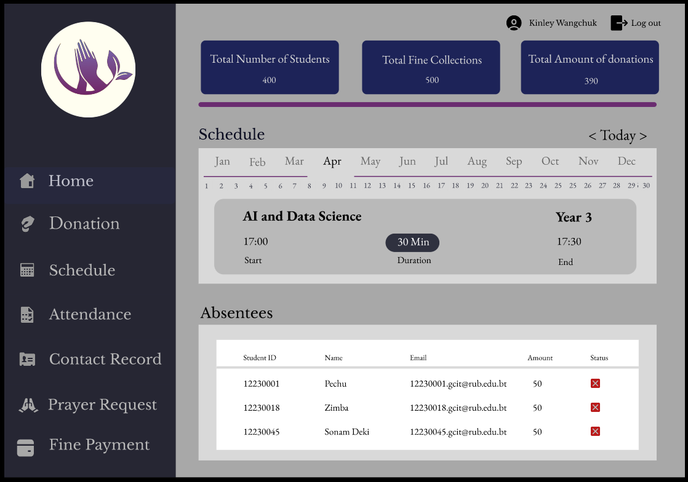
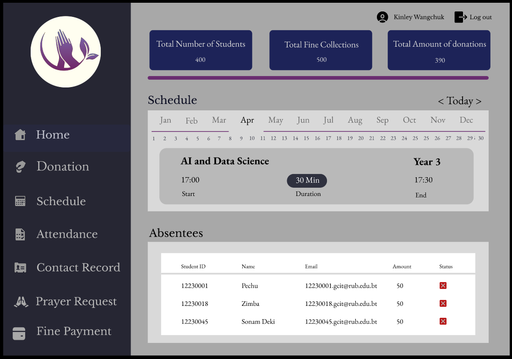

Overview
Prayer Hall Management: Website
Project description
UX Case Study
Duration: 14th Febuary - 25th May
Product Overview
This case study delves into the designing and creation of a user-friendly website that enables users to get information about their religious well-being and where the prayer councilors can keep track of the prayer hall events.
Problem
Difficult to manage and keep track of all the events related to prayer hall: Users struggled to manage and maintain tracks of events systematically.
Difficult to keep records of absentees: Users find it difficult to maintain records of absentees and the collected fines from the absentees.
Goal
Develop a website that helps users to maintain and manage all the prayer hall related events systematically.
 
